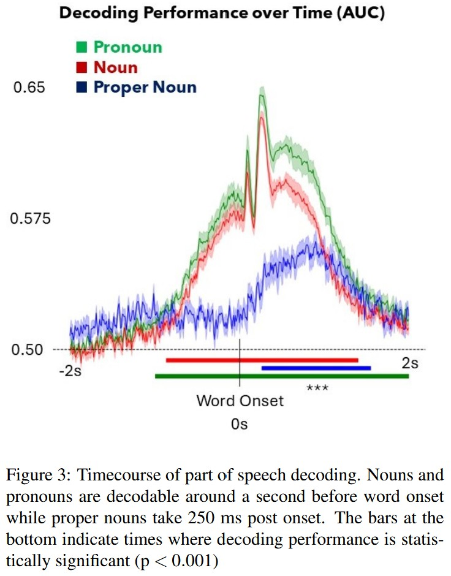

Decoding Coreference
Adapting a complex study on pronoun processing for both expert reviewers and peers
This was the first artifact I completed after taking all the main courses for the notation and represents the first time I was able to apply those skills to my coursework. Upon taking DATASCI 125: Unravelling the Inner-Workings of the Brain at the end of my sophomore year, I had the opportunity to practice tuning my science communication skills for various technical audiences. For the final project of this course, we were given a large neural dataset and tasked with designing a hypothesis and then testing it with the various techniques we learned through the data science major. At the end of the course, we wrote a conference paper and then presented our results to the class.
This project had two audiences, one imagined and one real. The imagined audience was that of experts—such as a reviewer deciding whether to accept my project to the conference or a fellow researcher using my work to advance their own research. As such I was able to write more technically, both situating my research within the larger body of work in speech research and equipping them with the details needed to replicate my results if so desired. For the paper I ultimately decided to choose a clean, well-labeled visualization style so that my results were clearly communicated as I wouldn’t be able to clarify anything that was confusing.

This figure clearly presents the results of my first analysis of the paper—that pronouns and nouns are decodable at similar time courses as each other. The colors highlight the 3 categories being plotted and the confidence intervals give a clear idea of the estimated range at each timepoint. The 3 bars at the bottom of the plot clearly indicate which time points are statistically significant. Additionally, the plot is otherwise free of clutter and only includes the information necessary, with a caption that clearly explains what is being displayed. Clear visualizations are important in scientific papers because they are usually the elements that quickly capture and hold the readers’ attention in an otherwise cluttered sea of words and results.
The real audience of this project, my classmates, required a more generalized approach. Even though we were all working with the same data, we chose to analyze different aspects of it and the topic of my project (coreference resolution) was likely unfamiliar to most.
For the presentation, I had to distill the most important information from the paper for my peers. As a more visual genre, I was able to walk the audience through the analyses I performed. I chose a more artistic data visualization style for the presentation to capture the audience’s attention. The data visualizations build up as I move through the slides, allowing me to present each bit of information in a digestible way.
Overall, this artifact shows how I was able to adapt my science communication to different types of specialized audiences and adjust my communication techniques to the medium in which I worked.